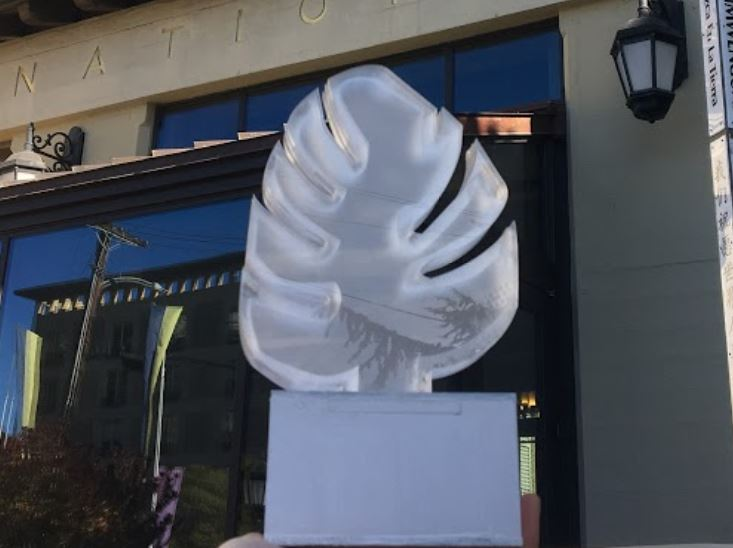
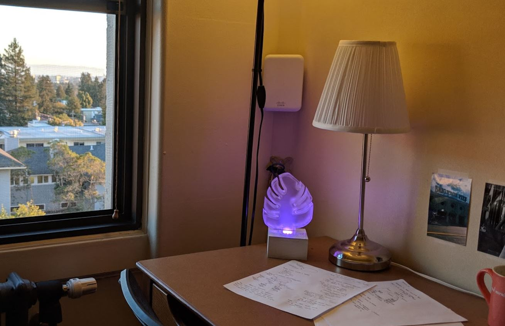
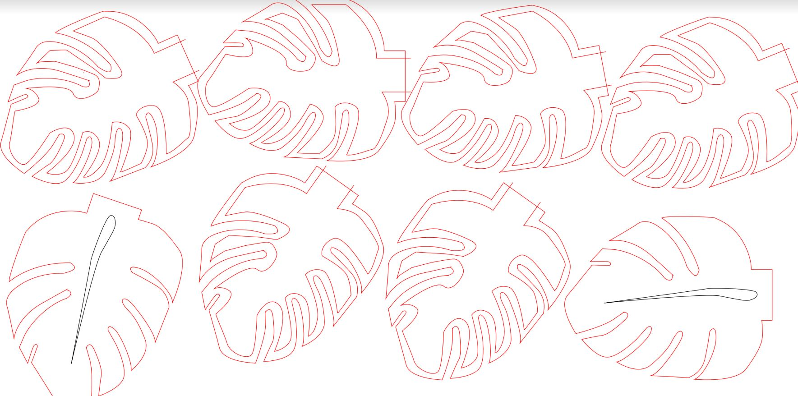
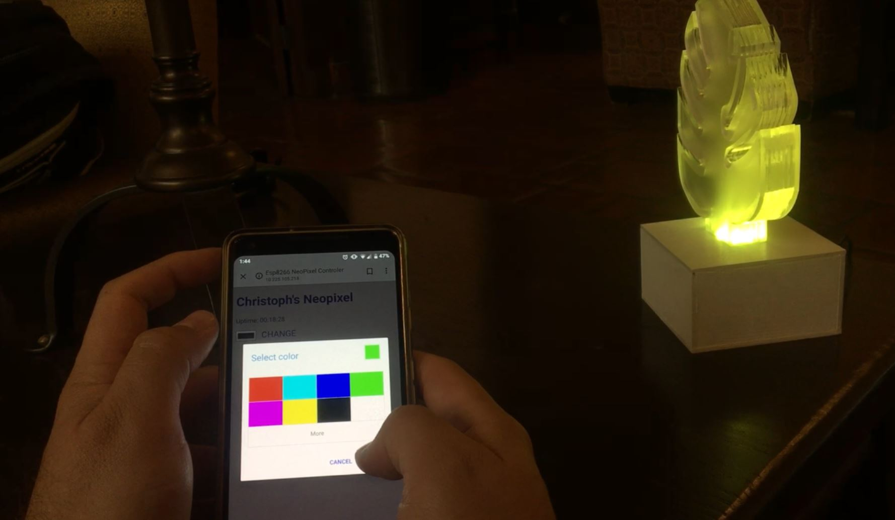

The goal of this project was to make a highly personalized device so we made this product for Malini Patel, a Resident Assistant in the international house at UC Berkeley. After a series of interviews and some preliminary research, our team created a wifi enabled lamp that allowed anyone with the lamp’s specific URL to change the the color of the leaf.

We designed this project around several of Malini’s interests. She loves LED light stips she installed in her room because of the customizable aspects of it. Furthermore, we gave it a web based controller so anyone on her floor can change the colors. She loves engaging her with her floor as an RA and wants to have a closer bond with her residents. Lastly, as pre-med, she spends a good amount of time in her room, so we wanted to make something that could be a fixture of the place she enjoys the most.

The top piece of the lamp is a hollow acrylic fixture made out of eight layers of stacked acrylic. The acrylic was laser cut and attached with acrylic cement. The hollowness of the lamp was made to catch the light of the neopixel ring that was attached to its base.

We controlled the neopixel ring and its colors using code developed by Agis Wichert and a tutorial based on
hackster.io. In the future, I would like to get a better understanding of how the code works. Additionally, I would have wanted to develop a more flushed out online website that anyone could access. Nevertheless, the progress we made on this project was fantastic and I’m fairly pleased with the end product.